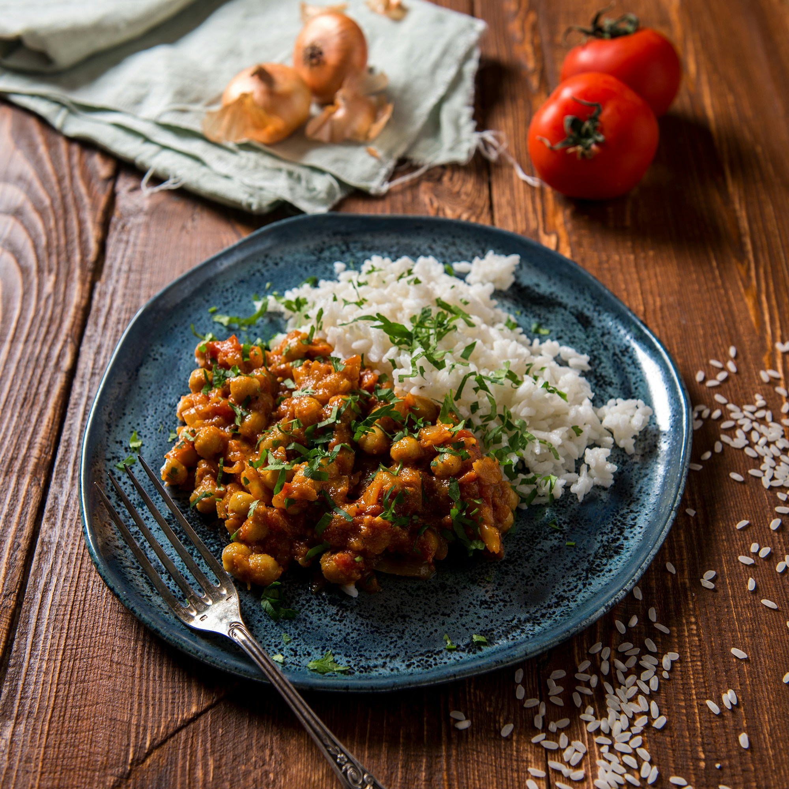

Home
Coconut Chickpea Curry Recipe

Photo by Dragne Marius on Unsplash
Description
This easy chickpea curry recipe is made with canned chickpeas for a fast, convenient vegan meal. You’ll only need one pot and 45 minutes to make this vegan dinner. The most effort required is when you prep the ingredients. It’s full of flavor, easy to make with simple ingredients, and packed with protein.
Ingredients
These are the ingredients you’ll need to make this chickpea curry recipe:
- Chickpeas
- Tomatoes, Onion and Garlic
- Coconut Milk (full fat recommended)
- Coconut Flour – This is optional, but it will thicken up the curry a little bit. You can also use regular flour.
- Coconut Oil
- Garam Masala – This is the main seasoning blend in this recipe! If you can’t find it, you can make your own.
- Salt, ground black pepper, curry powder, cumin and garlic
- Lime
Steps
- Heat the Oil: In a deep pot over medium-high heat, add the coconut oil.
- Add in the Onions and Tomatoes: Grind some sea salt and ground black pepper over the mixture and stir together.
- Lower heat to medium and allow to cook down until juices of the tomatoes are naturally released and onions are soft, about 10 minutes.
- Add in the Chickpeas: Also mix in the garlic, garam masala, curry powder and cumin. Stir to combine.
- Add in the Coconut Milk and Stir Again: Add in the coconut flour (or any flour, optional) which helps to slightly thicken the curry.
- Bring the curry to a boil, and then reduce to medium-low so that the mixture continues to simmer for 10 to 12 more minutes.
- Serve and Enjoy with veggies, rice or bread: Remove the curry from the heat and squeeze a lime lightly over the top of the curry, stirring to combine.